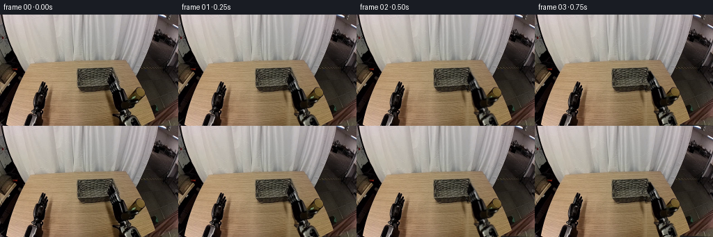
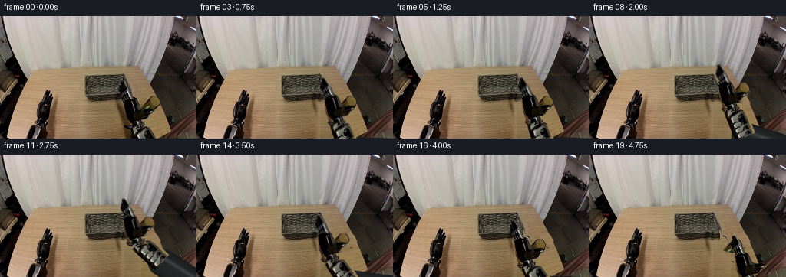

CODING AGENTS AS PIXEL WORLD MODELS
traex/GPT-6.1-Sol · common50_0036
点击播放 · 原生 RGB 像素
逐轮保存的候选
回放视频、检查图与代码变化。
每份候选均可单独播放。实际图片检查记录在下方工具轨迹中。
候选 01播放与检查图
点击播放 · 原生 RGB 像素


展开代码变化
--- 上一保存版本
+++ 本次保存版本
@@ -0,0 +1,199 @@
+"""Pixel-preserving, rigid-layer robotic pick-and-place animation.
+No learned components: all textures come from the supplied RGB frame.
+"""
+from pathlib import Path
+import numpy as np
+from PIL import Image, ImageDraw, ImageFilter
+import artifact_io
+
+ROOT = Path(__file__).resolve().parent
+SOURCE = np.array(Image.open(ROOT/'first_frame.png').convert('RGB'))
+H,W = SOURCE.shape[:2]
+YY,XX = np.mgrid[:H,:W].astype(float)
+GRID = np.stack([XX, YY], -1)
+F = SOURCE.astype(float)
+
+def polygon(points, blur=0):
+ a=Image.new('L',(W*4,H*4)); d=ImageDraw.Draw(a)
+ d.polygon([(round(x*4),round(y*4)) for x,y in points],fill=255)
+ a=a.resize((W,H),Image.Resampling.LANCZOS)
+ if blur: a=a.filter(ImageFilter.GaussianBlur(blur))
+ return np.array(a).astype(float)/255
+
+def sample(im, x, y):
+ x=np.clip(x,0,im.shape[1]-1.001); y=np.clip(y,0,im.shape[0]-1.001)
+ xi=x.astype(int); yi=y.astype(int); fx=x-xi; fy=y-yi
+ if im.ndim==3: fx=fx[...,None];fy=fy[...,None]
+ return (im[yi,xi]*(1-fx)*(1-fy)+im[yi,xi+1]*fx*(1-fy)+im[yi+1,xi]*(1-fx)*fy+im[yi+1,xi+1]*fx*fy)
+
+def over(dst,src,a):
+ return dst*(1-a[...,None])+src*a[...,None]
+
+def rigid(dst, texture, mask, old_pivot, new_pivot, angle=0):
+ # Inverse of a Euclidean transform: no stretch or change of geometry.
+ c,s=np.cos(angle),np.sin(angle)
+ v=GRID-np.array(new_pivot)
+ sx=c*v[...,0]+s*v[...,1]+old_pivot[0]
+ sy=-s*v[...,0]+c*v[...,1]+old_pivot[1]
+ valid=(sx>=0)&(sx<W-1)&(sy>=0)&(sy<H-1)
+ a=sample(mask,sx,sy)*valid
+ return over(dst,sample(texture,sx,sy),a)
+
+# Numerically traced silhouettes of rigid hardware and the glass.
+finger_a=polygon([(157,85),(160,85),(164,90),(168,96),(171,101),
+ (173,105),(174,110),(172,113),(168,112),(167,108),(165,106),
+ (161,108),(158,103),(155,100),(155,96),(156,92)])
+hand=polygon([(162,107),(169,106),(175,107),(178,109),(180,113),
+ (183,119),(187,121),(196,121),(201,122),(201,125),(197,128),
+ (193,132),(187,137),(185,140),(190,142),(194,146),(184,150),
+ (168,147),(165,144),(166,140),(165,136),(163,132),(162,126),
+ (161,120),(160,114),(160,110)])
+finger_b=polygon([(184,121),(191,121),(198,121),(201,122),
+ (201,125),(197,128),(193,132),(189,134),(184,132)])
+body=hand*(1-finger_b)
+arm_old=polygon([(166,142),(180,140),(195,146),(207,160),
+ (167,160),(165,152)])
+glass=polygon([(198,104),(204,104),(207,107),(209,111),(209,115),
+ (207,118),(203,121),(196,122),(189,121),(184,119),(185,116),
+ (189,112),(193,108),(196,105)])
+# Only the actual vessel, not its contact shadow or the black finger under it.
+glass *= np.clip((123-YY)/1.5,0,1)
+
+# Recover the static surface hidden by the moving equipment using a smooth
+# wood colour field and fine grain sampled from the unobstructed table.
+table_edge=147.1+.55*YY
+region=((XX>37)&(XX<108)&(YY>76)) | ((XX>80)&(XX<146)&(YY>115)) | ((XX>174)&(XX<194)&(YY>78)&(YY<102)) | ((XX>196)&(XX<215)&(YY>128)&(YY<149))
+region &= ~((XX<76)&(YY>93))
+region &= (F[...,0]>110)&(F[...,1]>85)&(F[...,2]>55)&(F[...,0]>F[...,1]*1.10)&(F[...,1]>F[...,2]*1.19)
+x=(XX-128)/128; y=(YY-100)/80
+features=np.stack([np.ones_like(x),x,y,x*x,x*y,y*y],-1)
+coef=np.linalg.lstsq(features[region],F[region],rcond=None)[0]
+for _ in range(3):
+ residual=np.linalg.norm(F[region]-features[region]@coef,axis=1)
+ keep=residual<np.percentile(residual,84)
+ coef=np.linalg.lstsq(features[region][keep],F[region][keep],rcond=None)[0]
+wood=features@coef
+# The illumination is fit globally; only zero-mean local texture is tiled.
+resid=F-features@coef
+sx=83+np.mod(XX.astype(int),23)
+grain=sample(resid,sx,YY)
+wood=np.clip(wood+grain*.65,0,255)
+# Static dark region beyond the table's oblique right edge.
+edge_alpha=np.clip(table_edge-XX+.45,0,1)
+repaired=over(F,wood,edge_alpha)
+
+# Restore the narrow right edge of the woven basket when a finger moves away.
+basket_right=166.0 + np.clip((YY-80)/30,0,1)*4.0
+basket_region=(YY>=76)&(YY<=111)&(XX< basket_right)&(XX>151)
+basket_texture=sample(F,143+np.mod(XX-151,11),YY)
+# Subtle dark, woven side wall at the basket boundary.
+side= np.clip((XX-(basket_right-3))/3,0,1)
+basket_texture *= 1-.26*side[...,None]
+repaired=np.where(basket_region[...,None],basket_texture,repaired)
+
+shadow_old=polygon([(156,109),(163,109),(168,131),(178,140),
+ (190,150),(189,160),(156,160)],blur=1.8)
+removal=np.maximum.reduce([finger_a,hand,arm_old,shadow_old])
+background=over(F,repaired,removal)
+background_cup=over(background,repaired,glass)
+
+# Forearm geometry. Link lengths and diameters remain fixed, with an
+# analytical revolute-joint IK solution at a base just outside the picture.
+w0=np.array([179.,139.]); e0=np.array([199.,177.]); base=np.array([269.,178.])
+lower_length=np.linalg.norm(e0-w0); upper_length=np.linalg.norm(base-e0)
+u0=(e0-w0)/lower_length; n0=np.array([-u0[1],u0[0]])
+
+def elbow_for(w):
+ v=base-w; d=np.linalg.norm(v); u=v/d
+ a=(lower_length**2-upper_length**2+d*d)/(2*d)
+ h=np.sqrt(max(0.,lower_length**2-a*a))
+ return w+a*u+h*np.array([-u[1],u[0]])
+
+def upper_link(dst, elbow):
+ u=(base-elbow)/upper_length; n=np.array([-u[1],u[0]])
+ v=GRID-elbow; along=v@u; across=v@n
+ clamped=np.clip(along,0,upper_length)
+ distance=np.sqrt(across**2+(along-clamped)**2)
+ a=np.clip(18.5-distance,0,1)
+ shade=np.clip(1-(across/18)**2,0,1)**.5
+ spec=np.exp(-((across+6)/2.4)**2)
+ col=np.zeros_like(F)+np.array([20.,22.,23.])
+ col+=shade[...,None]*np.array([16.,17.,17.])+spec[...,None]*np.array([26.,27.,26.])
+ # Longitudinal machining lines, deterministic and subtle.
+ col+=(np.sin(across*1.8)*.8)[...,None]
+ return over(dst,col,a)
+
+def lower_link(dst,w,e):
+ u=(e-w)/lower_length; n=np.array([-u[1],u[0]])
+ v=GRID-w; along=v@u; across=v@n
+ # Texture coordinates in the original rigid forearm's reference frame.
+ src=w0+along[...,None]*u0+across[...,None]*n0
+ # Extend the unseen portion from its visible steel cross-section.
+ ext_s=11.5+np.mod(along,7)
+ ext=w0+ext_s[...,None]*u0+across[...,None]*n0
+ valid=(src[...,1]<159)&(src[...,1]>=0)&(src[...,0]>=0)&(src[...,0]<255)
+ col=np.where(valid[...,None],sample(F,src[...,0],src[...,1]),sample(F,ext[...,0],ext[...,1]))
+ cap=np.clip(along-3.2,0,1)*np.clip(lower_length+1-along,0,1)
+ a=np.clip(14.4-np.abs(across),0,1)*cap
+ return over(dst,col,a)
+
+def ease(v):
+ v=np.clip(v,0,1); return v*v*(3-2*v)
+
+# Cartesian trajectory: cautious approach, close, vertical lift, carry,
+# descend to table, release, and withdraw. No camera or background motion.
+grasp=w0+np.array([7.,-5.])
+place_delta=np.array([-10.,6.])
+
+def state(i):
+ if i<=4:
+ w=w0+ease(i/4)*(grasp-w0); delta=np.zeros(2); close=0.; lifted=0.
+ elif i<=6:
+ w=grasp.copy(); delta=np.zeros(2); close=ease((i-4)/2);lifted=0.
+ elif i<=9:
+ lifted=23*ease((i-6)/3);delta=np.array([0.,-lifted]);w=grasp+delta;close=1.
+ elif i<=12:
+ delta=np.array([-10*ease((i-9)/3),-23.]);w=grasp+delta;close=1.;lifted=23.
+ elif i<=15:
+ k=ease((i-12)/3);delta=np.array([-10.,-23+29*k]);w=grasp+delta;close=1.;lifted=23*(1-k)
+ elif i<=16:
+ delta=place_delta.copy();w=grasp+delta;close=0.;lifted=0.
+ else:
+ delta=place_delta.copy();w=grasp+delta+ease((i-16)/3)*np.array([32.,20.]);close=0.;lifted=0.
+ return w,delta,close,lifted
+
+frames=[SOURCE.copy()]
+for i in range(1,20):
+ w,delta,close,lifted=state(i)
+ # Keep the untouched cup exact until lifting; thereafter its empty source
+ # position reveals the grain of the stationary wood.
+ img=background.copy() if i<=6 else background_cup.copy()
+ # A soft contact shadow follows both the cup and rigid moving hand.
+ cup_center=np.array([198.,118.])+np.array([delta[0], max(0.,delta[1])])
+ if i>6:
+ ca=np.exp(-((XX-cup_center[0])/11)**2-((YY-cup_center[1]-3)/3.3)**2)*(.25*(1-lifted/34))
+ ca*=np.clip(table_edge-XX,0,1)
+ img=over(img,img*.56,ca)
+ shadow_center=w+np.array([-6.,17.+lifted*.28])
+ sa=np.exp(-((XX-shadow_center[0])/13)**2-((YY-shadow_center[1])/13)**2)*.18
+ sa*=(YY>112)&(XX<table_edge)&(XX>147)
+ img=over(img,img*.65,sa)
+ e=elbow_for(w)
+ img=upper_link(img,e)
+ img=lower_link(img,w,e)
+ # Glass remains a single rigid texture layer (constant size and attitude).
+ if i>6:
+ img=rigid(img,F,glass,(198.,113.),np.array([198.,113.])+delta)
+ img=rigid(img,F,body,w0,w)
+ img=rigid(img,F,finger_a,w0,w+np.array([2.5*close,.6*close]))
+ img=rigid(img,F,finger_b,w0,w+np.array([-2.2*close,-.3*close]))
+ frames.append(np.clip(np.rint(img),0,255).astype(np.uint8))
+
+frames=np.stack(frames)
+assert np.array_equal(frames[0],SOURCE)
+artifact_io.save(frames,ROOT)
+np.savez_compressed(ROOT/'motion_check.npz', wrists=np.array([state(i)[0] for i in range(20)]),
+ elbows=np.array([elbow_for(state(i)[0]) for i in range(20)]),
+ glass_translation=np.array([state(i)[1] for i in range(20)]))
+if __name__=='__main__':
+ print('Saved',frames.shape,frames.dtype,'to',ROOT/'pixels.npz')
候选 02播放与检查图
点击播放 · 原生 RGB 像素

展开代码变化
--- 上一保存版本
+++ 本次保存版本
@@ -72,7 +72,11 @@
residual=np.linalg.norm(F[region]-features[region]@coef,axis=1)
keep=residual<np.percentile(residual,84)
coef=np.linalg.lstsq(features[region][keep],F[region][keep],rcond=None)[0]
-wood=features@coef
+wood_features=features.copy()
+right_x=np.minimum(XX,202.)
+rx=(right_x-128)/128
+wood_features=np.stack([np.ones_like(x),rx,y,rx*rx,rx*y,y*y],-1)
+wood=wood_features@coef
# The illumination is fit globally; only zero-mean local texture is tiled.
resid=F-features@coef
sx=83+np.mod(XX.astype(int),23)
@@ -99,7 +103,7 @@
# Forearm geometry. Link lengths and diameters remain fixed, with an
# analytical revolute-joint IK solution at a base just outside the picture.
-w0=np.array([179.,139.]); e0=np.array([199.,177.]); base=np.array([269.,178.])
+w0=np.array([179.,139.]); e0=np.array([185.,172.]); base=np.array([267.,176.])
lower_length=np.linalg.norm(e0-w0); upper_length=np.linalg.norm(base-e0)
u0=(e0-w0)/lower_length; n0=np.array([-u0[1],u0[0]])
@@ -129,12 +133,18 @@
# Texture coordinates in the original rigid forearm's reference frame.
src=w0+along[...,None]*u0+across[...,None]*n0
# Extend the unseen portion from its visible steel cross-section.
- ext_s=11.5+np.mod(along,7)
+ ext_s=np.full_like(along,18.)
ext=w0+ext_s[...,None]*u0+across[...,None]*n0
valid=(src[...,1]<159)&(src[...,1]>=0)&(src[...,0]>=0)&(src[...,0]<255)
col=np.where(valid[...,None],sample(F,src[...,0],src[...,1]),sample(F,ext[...,0],ext[...,1]))
+ # Reject reflected table pixels at the bevel: exposed link surfaces are
+ # metallic neutral charcoal and brushed steel, not wooden fragments.
+ is_wood=(col[...,0]>100)&(col[...,0]>col[...,1]*1.13)&(col[...,1]>col[...,2]*1.15)
+ lum=col@np.array([.299,.587,.114])
+ metal=np.stack([lum*.73,lum*.75,lum*.76],-1)
+ col=np.where(is_wood[...,None],metal,col)
cap=np.clip(along-3.2,0,1)*np.clip(lower_length+1-along,0,1)
- a=np.clip(14.4-np.abs(across),0,1)*cap
+ a=np.clip(12.5-np.abs(across),0,1)*cap
return over(dst,col,a)
def ease(v):
@@ -151,11 +161,11 @@
elif i<=6:
w=grasp.copy(); delta=np.zeros(2); close=ease((i-4)/2);lifted=0.
elif i<=9:
- lifted=23*ease((i-6)/3);delta=np.array([0.,-lifted]);w=grasp+delta;close=1.
+ lifted=17*ease((i-6)/3);delta=np.array([0.,-lifted]);w=grasp+delta;close=1.
elif i<=12:
- delta=np.array([-10*ease((i-9)/3),-23.]);w=grasp+delta;close=1.;lifted=23.
+ delta=np.array([-10*ease((i-9)/3),-17.]);w=grasp+delta;close=1.;lifted=17.
elif i<=15:
- k=ease((i-12)/3);delta=np.array([-10.,-23+29*k]);w=grasp+delta;close=1.;lifted=23*(1-k)
+ k=ease((i-12)/3);delta=np.array([-10.,-17+23*k]);w=grasp+delta;close=1.;lifted=17*(1-k)
elif i<=16:
delta=place_delta.copy();w=grasp+delta;close=0.;lifted=0.
else:
候选 03播放与检查图
可观测工具轨迹
实际执行的命令与返回图片。
命令 1exit 0
/bin/bash -lc "ls -la && cat prompt.txt && printf '\\n--- RULES ---\\n' && cat GENERATION_RULES.md"
命令 2exit 0
/bin/bash -lc "cat task_spec.json && cat artifact_io.py && python - <<'PY'
from PIL import Image
import numpy as np
im=np.array(Image.open('first_frame.png'))
print(im.shape)
# RGB averages sampled in blocks of 4x4, mapped to a fixed color character legend
palette={' ': (210,210,210),'.':(160,165,165),'s':(100,108,112),'#':(40,45,48),'K':(8,10,12),'w':(170,120,80),'W':(215,163,110),'b':(120,70,40),'r':(150,90,75),'B':(55,70,115),'c':(100,160,170),'o':(175,140,120)}
ps=np.array(list(palette.values())); cs=list(palette)
for y in range(0,160,4):
out=''
for x in range(0,256,4):
a=im[y:y+4,x:x+4].mean((0,1));out+=cs[np.argmin(np.linalg.norm(ps-a,axis=1))]
print(f'{y:3} '+out)
print('sample locations')
for y in range(0,160,10):
print(y,[tuple(im[y:y+5,x:x+5].mean((0,1)).astype(int)) for x in range(0,256,10)])
PY"命令 3exit 0
/bin/bash -lc "python - <<'PY'
from PIL import Image
import numpy as np
im=np.array(Image.open('first_frame.png')); lum=im@np.array([.299,.587,.114]); chars=' .,:;irsXA253hMHGS#9B&@'
for crop in [(96,68,232,160),(0,84,100,160),(200,0,256,130)]:
x0,y0,x1,y1=crop;print('CROP',crop,'luma each char=1 pixel horizontally, 2 vertically')
print(' '+''.join(str(x//10%10) for x in range(x0,x1)))
print(' '+''.join(str(x%10) for x in range(x0,x1)))
for y in range(y0,y1,2):
vals=lum[y:y+2,x0:x1].mean(0)
print(f'{y:3} '+''.join(chars[min(len(chars)-1,int(v/256*len(chars)))] for v in vals))
PY"命令 4exit 0
/bin/bash -lc "python - <<'PY'
from PIL import Image
import numpy as np
im=np.array(Image.open('first_frame.png')).astype(float)
for crop in [(145,85,222,160),(44,90,88,160)]:
x0,y0,x1,y1=crop; print('\\nCROP',crop)
for y in range(y0,y1):
line=''
for x in range(x0,x1):
r,g,b=im[y,x];v=(r+g+b)/3
if v<12: c='@'
elif v<32: c='#'
elif v<57: c='D'
elif r>g*1.12 and g>b*1.22:
c='a' if b<55 else 'w' if r<165 else 'W'
elif v<95:c='s'
elif v<135:c='S'
elif v<175:c='o'
else:c='.'
line+=c
print(f'{y:3} {line}')
print('glass candidate rgb')
for y in range(100,128,2):
print(y,[tuple(im[y,x].astype(int)) for x in range(186,210,2)])
PY"命令 5exit 0
/bin/bash -lc "python - <<'PY'
import numpy as np
from PIL import Image
im=np.array(Image.open('first_frame.png')); print('top object luma')
chars=' .:-=+*#%@'
for y in range(98,128):
print(f'{y:3} '+''.join(chars[int(v/256*len(chars))] for v in im[y,180:214]@np.array([.299,.587,.114])))
print('basket extent dark per row x100:180')
for y in range(74,114):
s=(im[y,100:180].mean(-1)<112)
xs=np.where(s)[0]+100
print(y, xs.min() if len(xs) else None,xs.max() if len(xs) else None)
PY"命令 6exit 0
/bin/bash -lc "python - <<'PY'
import numpy as np
from PIL import Image
im=np.array(Image.open('first_frame.png'));
# high resolution luminance map of right robot, each char exactly 1 pixel
chars=' .,:;irsXA253hMHGS#9B&@'
x0,x1=150,204
print(' '+''.join(str(x//10%10) for x in range(x0,x1)))
print(' '+''.join(str(x%10) for x in range(x0,x1)))
for y in range(82,160):
print(f'{y:3} '+''.join(chars[int(v/256*len(chars))] for v in im[y,x0:x1]@np.array([.299,.587,.114])))
PY"命令 7exit 0
/bin/bash -lc "python - <<'PY'
import numpy as np
for base,L,M in [((240,205),75,50),((237,211),80,55),((225,216),85,55),((236,211),70,60),((241,221),100,60)]:
b=np.array(base,float)
print('B',base,L,M)
for w in [(179,139),(210,144),(202,102),(205,132),(218,163)]:
w=np.array(w,float);d=np.linalg.norm(b-w);a=(L*L-M*M+d*d)/(2*d);h=np.sqrt(max(0,L*L-a*a)); u=(b-w)/d
e=w+a*u+h*np.array([-u[1],u[0]])
e2=w+a*u-h*np.array([-u[1],u[0]])
print(w,'elbow',e.round(1),e2.round(1))
PY"命令 8exit 0
/bin/bash -lc "python - <<'PY'
from PIL import Image
import numpy as np
im=np.array(Image.open('first_frame.png')).astype(float)
for y in range(100,129):
line=''
for x in range(178,218):
r,g,b=im[y,x];
if g/(b+1)>1.7 and r/(g+1)<1.4 and g>20:c='G'
elif r<35 and g<35:c='#'
elif g>r:c='c'
elif r>120 and g>85 and b>65:c='w'
else:c='.'
line+=c
print(y,line)
PY"命令 9exit 0
/bin/bash -lc "python - <<'PY' import numpy as np b=np.array([251.,205]);e=np.array([200.,178]);w0=np.array([179.,139]);L=np.linalg.norm(b-e);M=np.linalg.norm(e-w0);print(L,M) for w in [w0,(205,135),(206,115),(194,111),(193,128),(221,140)]: w=np.array(w,float);d=np.linalg.norm(b-w);a=(M*M-L*L+d*d)/(2*d);h=np.sqrt(max(0,M*M-a*a));u=(b-w)/d e=w+a*u+h*np.array([-u[1],u[0]]) print(w,e) PY"
命令 10exit 0
/bin/bash -lc "python - <<'PY' import numpy as np b=np.array([269.,178]);e0=np.array([199.,177]);w0=np.array([179.,139]);L=np.linalg.norm(b-e0);M=np.linalg.norm(e0-w0);print(L,M) for w in [w0,(177,143),(177,120),(182,138),(184,166),(206,135)]: w=np.array(w,float);d=np.linalg.norm(b-w);a=(M*M-L*L+d*d)/(2*d);h=np.sqrt(max(0,M*M-a*a));u=(b-w)/d; e=w+a*u+h*np.array([-u[1],u[0]]);print(w,e) PY"
命令 11exit 0
/bin/bash -lc "python - <<'PY'
import numpy as np
from PIL import Image
im=np.array(Image.open('first_frame.png')).astype(float)
for y in range(96,127):
print('%3d'%y, ' '.join('%3d'%v for v in im[y,188:214,0]))
print('ratios g/b')
for y in range(96,127):
print('%3d'%y, ' '.join('%3.1f'%v for v in (im[y,188:214,1]/(im[y,188:214,2]+1))))
PY"命令 12exit 0
/bin/bash -lc "python - <<'PY'
from PIL import Image
import numpy as np
im=np.array(Image.open('first_frame.png'))
for y in range(84,116,2):
print('y',y, ' '.join('%d:%d'%(x,im[y,x].mean()) for x in range(152,185)))
PY"命令 13exit 0
/bin/bash -lc "cat > generate.py <<'PY'
\"\"\"Pixel-preserving, rigid-layer robotic pick-and-place animation.
No learned components: all textures come from the supplied RGB frame.
\"\"\"
from pathlib import Path
import numpy as np
from PIL import Image, ImageDraw, ImageFilter
import artifact_io
ROOT = Path(__file__).resolve().parent
SOURCE = np.array(Image.open(ROOT/'first_frame.png').convert('RGB'))
H,W = SOURCE.shape[:2]
YY,XX = np.mgrid[:H,:W].astype(float)
GRID = np.stack([XX, YY], -1)
F = SOURCE.astype(float)
def polygon(points, blur=0):
a=Image.new('L',(W*4,H*4)); d=ImageDraw.Draw(a)
d.polygon([(round(x*4),round(y*4)) for x,y in points],fill=255)
a=a.resize((W,H),Image.Resampling.LANCZOS)
if blur: a=a.filter(ImageFilter.GaussianBlur(blur))
return np.array(a).astype(float)/255
def sample(im, x, y):
x=np.clip(x,0,im.shape[1]-1.001); y=np.clip(y,0,im.shape[0]-1.001)
xi=x.astype(int); yi=y.astype(int); fx=x-xi; fy=y-yi
if im.ndim==3: fx=fx[...,None];fy=fy[...,None]
return (im[yi,xi]*(1-fx)*(1-fy)+im[yi,xi+1]*fx*(1-fy)+im[yi+1,xi]*(1-fx)*fy+im[yi+1,xi+1]*fx*fy)
def over(dst,src,a):
return dst*(1-a[...,None])+src*a[...,None]
def rigid(dst, texture, mask, old_pivot, new_pivot, angle=0):
# Inverse of a Euclidean transform: no stretch or change of geometry.
c,s=np.cos(angle),np.sin(angle)
v=GRID-np.array(new_pivot)
sx=c*v[...,0]+s*v[...,1]+old_pivot[0]
sy=-s*v[...,0]+c*v[...,1]+old_pivot[1]
valid=(sx>=0)&(sx<W-1)&(sy>=0)&(sy<H-1)
a=sample(mask,sx,sy)*valid
return over(dst,sample(texture,sx,sy),a)
# Numerically traced silhouettes of rigid hardware and the glass.
finger_a=polygon([(157,85),(160,85),(164,90),(168,96),(171,101),
(173,105),(174,110),(172,113),(168,112),(167,108),(165,106),
(161,108),(158,103),(155,100),(155,96),(156,92)])
hand=polygon([(162,107),(169,106),(175,107),(178,109),(180,113),
(183,119),(187,121),(196,121),(201,122),(201,125),(197,128),
(193,132),(187,137),(185,140),(190,142),(194,146),(184,150),
(168,147),(165,144),(166,140),(165,136),(163,132),(162,126),
(161,120),(160,114),(160,110)])
finger_b=polygon([(184,121),(191,121),(198,121),(201,122),
(201,125),(197,128),(193,132),(189,134),(184,132)])
body=hand*(1-finger_b)
arm_old=polygon([(166,142),(180,140),(195,146),(207,160),
(167,160),(165,152)])
glass=polygon([(198,104),(204,104),(207,107),(209,111),(209,115),
(207,118),(203,121),(196,122),(189,121),(184,119),(185,116),
(189,112),(193,108),(196,105)])
# Only the actual vessel, not its contact shadow or the black finger under it.
glass *= np.clip((123-YY)/1.5,0,1)
# Recover the static surface hidden by the moving equipment using a smooth
# wood colour field and fine grain sampled from the unobstructed table.
table_edge=147.1+.55*YY
region=((XX>37)&(XX<108)&(YY>76)) | ((XX>80)&(XX<146)&(YY>115)) | ((XX>174)&(XX<194)&(YY>78)&(YY<102)) | ((XX>196)&(XX<215)&(YY>128)&(YY<149))
region &= ~((XX<76)&(YY>93))
region &= (F[...,0]>110)&(F[...,1]>85)&(F[...,2]>55)&(F[...,0]>F[...,1]*1.10)&(F[...,1]>F[...,2]*1.19)
x=(XX-128)/128; y=(YY-100)/80
features=np.stack([np.ones_like(x),x,y,x*x,x*y,y*y],-1)
coef=np.linalg.lstsq(features[region],F[region],rcond=None)[0]
for _ in range(3):
residual=np.linalg.norm(F[region]-features[region]@coef,axis=1)
keep=residual<np.percentile(residual,84)
coef=np.linalg.lstsq(features[region][keep],F[region][keep],rcond=None)[0]
wood=features@coef
# The illumination is fit globally; only zero-mean local texture is tiled.
resid=F-features@coef
sx=83+np.mod(XX.astype(int),23)
grain=sample(resid,sx,YY)
wood=np.clip(wood+grain*.65,0,255)
# Static dark region beyond the table's oblique right edge.
edge_alpha=np.clip(table_edge-XX+.45,0,1)
repaired=over(F,wood,edge_alpha)
# Restore the narrow right edge of the woven basket when a finger moves away.
basket_right=166.0 + np.clip((YY-80)/30,0,1)*4.0
basket_region=(YY>=76)&(YY<=111)&(XX< basket_right)&(XX>151)
basket_texture=sample(F,143+np.mod(XX-151,11),YY)
# Subtle dark, woven side wall at the basket boundary.
side= np.clip((XX-(basket_right-3))/3,0,1)
basket_texture *= 1-.26*side[...,None]
repaired=np.where(basket_region[...,None],basket_texture,repaired)
shadow_old=polygon([(156,109),(163,109),(168,131),(178,140),
(190,150),(189,160),(156,160)],blur=1.8)
removal=np.maximum.reduce([finger_a,hand,arm_old,shadow_old])
background=over(F,repaired,removal)
background_cup=over(background,repaired,glass)
# Forearm geometry. Link lengths and diameters remain fixed, with an
# analytical revolute-joint IK solution at a base just outside the picture.
w0=np.array([179.,139.]); e0=np.array([199.,177.]); base=np.array([269.,178.])
lower_length=np.linalg.norm(e0-w0); upper_length=np.linalg.norm(base-e0)
u0=(e0-w0)/lower_length; n0=np.array([-u0[1],u0[0]])
def elbow_for(w):
v=base-w; d=np.linalg.norm(v); u=v/d
a=(lower_length**2-upper_length**2+d*d)/(2*d)
h=np.sqrt(max(0.,lower_length**2-a*a))
return w+a*u+h*np.array([-u[1],u[0]])
def upper_link(dst, elbow):
u=(base-elbow)/upper_length; n=np.array([-u[1],u[0]])
v=GRID-elbow; along=v@u; across=v@n
clamped=np.clip(along,0,upper_length)
distance=np.sqrt(across**2+(along-clamped)**2)
a=np.clip(18.5-distance,0,1)
shade=np.clip(1-(across/18)**2,0,1)**.5
spec=np.exp(-((across+6)/2.4)**2)
col=np.zeros_like(F)+np.array([20.,22.,23.])
col+=shade[...,None]*np.array([16.,17.,17.])+spec[...,None]*np.array([26.,27.,26.])
# Longitudinal machining lines, deterministic and subtle.
col+=(np.sin(across*1.8)*.8)[...,None]
return over(dst,col,a)
def lower_link(dst,w,e):
u=(e-w)/lower_length; n=np.array([-u[1],u[0]])
v=GRID-w; along=v@u; across=v@n
# Texture coordinates in the original rigid forearm's reference frame.
src=w0+along[...,None]*u0+across[...,None]*n0
# Extend the unseen portion from its visible steel cross-section.
ext_s=11.5+np.mod(along,7)
ext=w0+ext_s[...,None]*u0+across[...,None]*n0
valid=(src[...,1]<159)&(src[...,1]>=0)&(src[...,0]>=0)&(src[...,0]<255)
col=np.where(valid[...,None],sample(F,src[...,0],src[...,1]),sample(F,ext[...,0],ext[...,1]))
cap=np.clip(along-3.2,0,1)*np.clip(lower_length+1-along,0,1)
a=np.clip(14.4-np.abs(across),0,1)*cap
return over(dst,col,a)
def ease(v):
v=np.clip(v,0,1); return v*v*(3-2*v)
# Cartesian trajectory: cautious approach, close, vertical lift, carry,
# descend to table, release, and withdraw. No camera or background motion.
grasp=w0+np.array([7.,-5.])
place_delta=np.array([-10.,6.])
def state(i):
if i<=4:
w=w0+ease(i/4)*(grasp-w0); delta=np.zeros(2); close=0.; lifted=0.
elif i<=6:
w=grasp.copy(); delta=np.zeros(2); close=ease((i-4)/2);lifted=0.
elif i<=9:
lifted=23*ease((i-6)/3);delta=np.array([0.,-lifted]);w=grasp+delta;close=1.
elif i<=12:
delta=np.array([-10*ease((i-9)/3),-23.]);w=grasp+delta;close=1.;lifted=23.
elif i<=15:
k=ease((i-12)/3);delta=np.array([-10.,-23+29*k]);w=grasp+delta;close=1.;lifted=23*(1-k)
elif i<=16:
delta=place_delta.copy();w=grasp+delta;close=0.;lifted=0.
else:
delta=place_delta.copy();w=grasp+delta+ease((i-16)/3)*np.array([32.,20.]);close=0.;lifted=0.
return w,delta,close,lifted
frames=[SOURCE.copy()]
for i in range(1,20):
w,delta,close,lifted=state(i)
# Keep the untouched cup exact until lifting; thereafter its empty source
# position reveals the grain of the stationary wood.
img=background.copy() if i<=6 else background_cup.copy()
# A soft contact shadow follows both the cup and rigid moving hand.
cup_center=np.array([198.,118.])+np.array([delta[0], max(0.,delta[1])])
if i>6:
ca=np.exp(-((XX-cup_center[0])/11)**2-((YY-cup_center[1]-3)/3.3)**2)*(.25*(1-lifted/34))
ca*=np.clip(table_edge-XX,0,1)
img=over(img,img*.56,ca)
shadow_center=w+np.array([-6.,17.+lifted*.28])
sa=np.exp(-((XX-shadow_center[0])/13)**2-((YY-shadow_center[1])/13)**2)*.18
sa*=(YY>112)&(XX<table_edge)&(XX>147)
img=over(img,img*.65,sa)
e=elbow_for(w)
img=upper_link(img,e)
img=lower_link(img,w,e)
# Glass remains a single rigid texture layer (constant size and attitude).
if i>6:
img=rigid(img,F,glass,(198.,113.),np.array([198.,113.])+delta)
img=rigid(img,F,body,w0,w)
img=rigid(img,F,finger_a,w0,w+np.array([2.5*close,.6*close]))
img=rigid(img,F,finger_b,w0,w+np.array([-2.2*close,-.3*close]))
frames.append(np.clip(np.rint(img),0,255).astype(np.uint8))
frames=np.stack(frames)
assert np.array_equal(frames[0],SOURCE)
artifact_io.save(frames,ROOT)
np.savez_compressed(ROOT/'motion_check.npz', wrists=np.array([state(i)[0] for i in range(20)]),
elbows=np.array([elbow_for(state(i)[0]) for i in range(20)]),
glass_translation=np.array([state(i)[1] for i in range(20)]))
if __name__=='__main__':
print('Saved',frames.shape,frames.dtype,'to',ROOT/'pixels.npz')
PY
python generate.py"命令 14exit 0
/bin/bash -lc "python - <<'PY'
from PIL import Image
import numpy as np
chars=' .,:;irsXA253hMHGS#9B&@'
for i in (0,4,6,9,15,19):
a=np.array(Image.open('frames/%02d.png'%i)); print('\\nFRAME',i)
print(' '+''.join(str(x//10%10) for x in range(150,224)))
for y in range(84,160,2):
print('%3d '%y+''.join(chars[int(v/256*len(chars))] for v in a[y:y+2,150:224].mean(0)@np.array([.299,.587,.114])))
print('motion constraints')
s=np.load('motion_check.npz');print(s['wrists']);print(s['elbows']);print('link length range',np.linalg.norm(s['elbows']-s['wrists'],axis=1).min(),np.linalg.norm(s['elbows']-s['wrists'],axis=1).max())
f=np.array([np.array(Image.open('frames/%02d.png'%i)) for i in range(20)])
print('delta pixels',np.sum(np.any(f[1:]"'!=f[:-1],axis=-1),axis=(1,2)))
print('"'frame0 equal', np.array_equal(f[0],np.array(Image.open('first_frame.png'))))
PY"命令 15exit 0
/bin/bash -lc "python - <<'PY'
exec(open('generate.py').read().split('frames=[SOURCE.copy()]')[0])
for s in [5,10,15,20,25,30]:
pts=w0+s*u0+np.arange(-18,19)[:,None]*n0
cols=sample(F,pts[:,0],pts[:,1]);print(s, ''.join('W' if c[0]>115 and c[1]>80 and c[2]>50 else '.' if c.mean()>100 else 's' if c.mean()>55 else '#' if c.mean()>25 else '@' for c in cols));print('avg', cols[5:-5].mean(0))
print('coef',coef)
PY"命令 16exit 0
/bin/bash -lc "python - <<'PY'
import numpy as np
from PIL import Image
im=np.array(Image.open('first_frame.png')).astype(float);w=np.array([179,139]);e=np.array([185,172]);u=(e-w)/np.linalg.norm(e-w);n=np.array([-u[1],u[0]])
for s in [0,5,10,15,20]:
p=w+s*u+np.arange(-15,16)[:,None]*n;x=np.rint(p[:,0]).astype(int);y=np.rint(p[:,1]).astype(int);valid=(x>=0)&(x<256)&(y>=0)&(y<160);c=im[np.clip(y,0,159),np.clip(x,0,255)]; print(s,''.join('W' if a[0]>115 and a[1]>80 and a[2]>50 else '.' if a.mean()>100 else 's' if a.mean()>55 else '#' if a.mean()>25 else '@' for a in c))
b=np.array([260.,210]);L=np.linalg.norm(e-b);M=np.linalg.norm(e-w);print('len',L,M)
for wr in [w,(186,134),(176,111),(208,160)]:
wr=np.array(wr);v=b-wr;d=np.linalg.norm(v);uu=v/d;a=(M*M-L*L+d*d)/(2*d);h=np.sqrt(max(0,M*M-a*a));ee=wr+a*uu+h*np.array([-uu[1],uu[0]]);print(wr,ee)
PY"命令 17exit 0
/bin/bash -lc "python - <<'PY'
import numpy as np
w=np.array([179,139.]);e=np.array([185.,172]);M=np.linalg.norm(w-e)
for b in [np.array([257.,180]),np.array([268.,180]),np.array([260.,160]),np.array([267.,176])]:
L=np.linalg.norm(e-b);print('base',b,L)
for wr in [w,(186,134),(181,116),(176,122),(208,160)]:
wr=np.array(wr);v=b-wr;d=np.linalg.norm(v);u=v/d;a=(M*M-L*L+d*d)/(2*d);h=np.sqrt(max(0,M*M-a*a));ee=wr+a*u+h*np.array([-u[1],u[0]]);print(wr,ee.round(1),'distance',d,'max',L+M)
PY"命令 18exit 0
/bin/bash -lc "cp generate.py .tmp/candidate1.py && python - <<'PY'
p='generate.py'
s=open(p).read()
s=s.replace(\"e0=np.array([199.,177.]); base=np.array([269.,178.])\",\"e0=np.array([185.,172.]); base=np.array([267.,176.])\")
s=s.replace('14.4-np.abs(across)','12.5-np.abs(across)')
s=s.replace('ext_s=11.5+np.mod(along,7)','ext_s=np.full_like(along,18.)')
s=s.replace(\"col=np.where(valid[...,None],sample(F,src[...,0],src[...,1]),sample(F,ext[...,0],ext[...,1]))\", \"col=np.where(valid[...,None],sample(F,src[...,0],src[...,1]),sample(F,ext[...,0],ext[...,1]))\\n # Reject reflected table pixels at the bevel: exposed link surfaces are\\n # metallic neutral charcoal and brushed steel, not wooden fragments.\\n is_wood=(col[...,0]>100)&(col[...,0]>col[...,1]*1.13)&(col[...,1]>col[...,2]*1.15)\\n lum=col@np.array([.299,.587,.114])\\n metal=np.stack([lum*.73,lum*.75,lum*.76],-1)\\n col=np.where(is_wood[...,None],metal,col)\")
s=s.replace('lifted=23*ease','lifted=17*ease').replace('),-23.])', '),-17.])').replace('close=1.;lifted=23.', 'close=1.;lifted=17.').replace('[-10.,-23+29*k]', '[-10.,-17+23*k]').replace('lifted=23*(1-k)', 'lifted=17*(1-k)')
# Do not change the image colour gradient after the last visible table sample.
s=s.replace('wood=features@coef', \"wood_features=features.copy()\\nright_x=np.minimum(XX,202.)\\nrx=(right_x-128)/128\\nwood_features=np.stack([np.ones_like(x),rx,y,rx*rx,rx*y,y*y],-1)\\nwood=wood_features@coef\")
open(p,'w').write(s)
PY
python generate.py
python - <<'PY'
import numpy as np
s=np.load('motion_check.npz');print('rigid lengths',np.linalg.norm(s['elbows']-s['wrists'],axis=1));print('glass',s['glass_translation']);
from PIL import Image
chars=' .,:;irsXA253hMHGS#9B&@'
for i in (1,9,19):
a=np.array(Image.open('frames/%02d.png'%i));print('FRAME',i)
for y in range(110,160,3):
print(y,''.join(chars[int(v/256*len(chars))] for v in a[y:y+3,160:240].mean(0)@np.array([.299,.587,.114])))
PY"命令 19exit 0
/bin/bash -lc "python - <<'PY'
from pathlib import Path
from PIL import Image
import numpy as np, json
p=Path('.')
f=np.stack([np.array(Image.open(p/'frames'/f'{i:02d}.png').convert('RGB')) for i in range(20)])
a=np.load('pixels.npz')['pixels'];unpacked=np.stack([(a>>16)&255,(a>>8)&255,a&255],-1).transpose(2,0,1,3).astype(np.uint8)
s=np.load('motion_check.npz'); lower=np.linalg.norm(s['wrists']-s['elbows'],axis=1);upper=np.linalg.norm(s['elbows']-np.array([267.,176.]),axis=1)
assert f.shape==(20,160,256,3) and f.dtype==np.uint8
assert np.array_equal(f[0],np.array(Image.open('first_frame.png')))
assert np.array_equal(f,unpacked)
assert np.ptp(lower)<1e-9 and np.ptp(upper)<1e-9
assert np.array_equal(f[:,:60,35:150],np.broadcast_to(f[0,:60,35:150], f[:,:60,35:150].shape))
report={'frames':20,'size':[256,160],'fps':4,'first_frame_pixel_identical':True,'fixed_background_verified':True,'lower_link_length_px':float(lower[0]),'upper_link_length_px':float(upper[0]),'maximum_link_length_variation':float(max(np.ptp(lower),np.ptp(upper))),'glass_final_translation_px':s['glass_translation'][-1].tolist()}
(p/'validation.json').write_text(json.dumps(report,indent=2))
print(json.dumps(report,indent=2))
print('deliverables:', [(n, (p/n).stat().st_size) for n in ('generate.py','pixels.npz','index.html','inspection.png')])
PY"保存候选 3 份；完成命令 19 次；可验证图片返回 0 张。原始 API 响应与完整日志保留在本地。